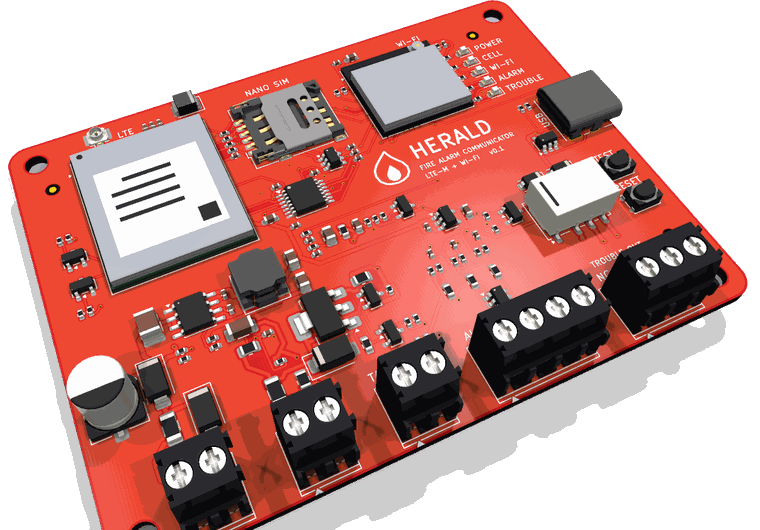

Blog ·
Herald: answering a fire panel's phone call in firmware
- examples
- herald
- dtmf
- signal processing
- fire alarms
Herald is a board that sits beside a fire alarm panel and passes its reports on. Many panels report by dialing a monitoring station over a phone line. Herald stands in for that line and sends them over LTE-M, a low-power form of 4G cellular, with Wi-Fi as backup. We made it as an example for Via, our toolkit for circuit boards designed by AI.

We're Team Reagent, the electrical engineers who build Via. An AI agent designed Herald with Via's tools, skills and checks. We asked it for a compact board, and then we read through everything it did, its checks and its mistakes included. It came out at 84.4 by 64 mm on four copper layers, with all 127 parts on the front. You can turn it around in 3D on Herald's page.
How a fire panel places a call
A fire panel's dialer takes the line the way any phone does, with loop start signaling. While the line's on hook, the exchange holds about 48 V across the pair. To go off hook, the dialer closes a loop between the wires, and the exchange senses the current and plays dial tone.
So Herald has to play the exchange, which means it feeds the line as well as listening to it. Two transistors feed the line from the panel's 24 V output and limit its current to 20 to 28 mA. A 47 ohm resistor turns that current into a voltage the ESP32-S3 reads. In simulation it's 0.776 V or more off hook and 0.040 V or less on hook, an easy difference for the firmware to tell.
Herald then has to run the rest of the call. It plays dial tone, 350 and 440 Hz together. Once the dialer has dialed, Herald answers with a handshake of 1400 Hz and then 2300 Hz, 100 ms each, and the dialer sends its message as touch-tone digits. If the message is good, Herald confirms it with a "kissoff" tone of 1400 Hz for 800 ms.
The message is in Contact ID, a format from the alarm maker Ademco that's now the standard SIA DC-05. Its 16 digits hold an account, a zone and an event code, and code 110 means fire alarm. The last digit is set so the sum of all 16 is a multiple of 15, with each 0 counted as 10. We like how simple that check is. If a digit arrives wrong, the sum breaks and Herald sends no kissoff, so the dialer sends the message again. The agent took these values from open-source receivers and makers' documents, and none of them came from the DC-05 text itself.
Eight tones for 16 keys
Each DTMF key sounds one of four row tones and one of four column tones at once. The rows use 697, 770, 852 and 941 Hz, and the columns use 1209, 1336, 1477 and 1633 Hz. ITU-T Recommendation Q.23, from 1988, fixes these frequencies. Its companion, Q.24, says what a receiver must accept and refuse.
Herald's limits come from Table A-1 of Q.24. The decoder has to take tones from 0 down to -25 dBm, a span of about 300 to 1. A tone that's 1.5 % off its frequency has to pass, and one that's 3.5 % off has to be refused. It also has to count a 40 ms digit and ignore a 23 ms burst.
How the firmware hears one tone
The tone detector is the part of Herald we like best. It uses a method Gerald Goertzel published in 1958, in The American Mathematical Monthly. His paper is "An Algorithm for the Evaluation of Finite Trigonometric Series", and it's at doi:10.2307/2310304. The method works as a filter tuned to one frequency.
The filter keeps two running numbers. Each new sample updates them with one multiply, by a constant set from the target frequency, so the filter can sit exactly on a DTMF tone. The numbers stay small unless the signal holds that frequency. When it does, each sample adds in step with the last one, and they grow. At the end, one formula turns the two numbers into the power at that frequency.
So Herald gets by without a DTMF chip. Its decoder, dtmf.c, runs eight of these filters, one for each tone. Each window is 205 samples at 8 kHz, or 25.6 ms. A window that long separates tones about 39 Hz apart, and the two closest DTMF tones are 73 Hz apart.
An FFT is the usual tool, but it measures every frequency in the window, and Herald only needs eight. Goertzel costs one multiply per sample per tone, so 205 samples times eight tones is 1640 multiplies. A 256-point FFT takes 1024 steps, each with a complex multiply worth four ordinary ones. Its answers also fall on a 31.25 Hz grid that misses every DTMF tone.
On a computer, the tests play all 16 keys through the decoder along with tones it has to refuse, and they pass.
Telling an alarm from a cut wire
Other panels report by closing a relay contact. If the wire to a bare contact breaks, it looks the same as an open contact, which is the quiet state. So fire systems add an end-of-line resistor across the contact, at its far end.
Each of Herald's three inputs has a 4.7 kilohm pull-up to 3.3 V. The end-of-line resistor is the same value, so a whole loop reads about half of 3.3 V. A closed contact pulls the reading near zero, and a cut wire leaves only the pull-up, so the reading rises to 3.3 V.
Four simulations try these cases at 0 and 50 °C and at each part's tolerance limits. The worst readings are 0.151 V closed, 1.555 to 1.798 V whole and 3.186 V cut. Each one stays at least 0.2 V from the firmware's thresholds.
Supervision runs the other way too. Herald holds a relay on while it's healthy, so if the supply is lost or the board resets, the relay opens and warns the panel.
How the design went
The agent wrote the whole board as one Python file, design.py. Via turns that file into a KiCad project and routes it, then checks the electrical rules, the design rules, the simulation and the fabrication files.
workcenter design design.py --route
workcenter gates .Herald's simulation has eight decks, and together they made 573 runs across temperature and tolerance. On the last run all four checks passed, with seven warnings for white printing at the board's edge.
In six of the eight design rounds, a reviewer who was new to the board read its pictures against one fixed prompt, and the reviewer's list became the next round's work. Over the rounds the board shrank from 96 to 84.4 mm wide, and its terminals changed to black.
The simulation's best catch was in the tone output. The ESP32 makes its tones as fast pulses, and two resistor-capacitor filters smooth them into a sine wave. The first version used 10 kilohm resistors and 10 nF capacitors. In simulation it put 28 mV on the line, where the deck asks for 62 mV, about -25 dBm. With 10 kilohms in front of it, the line's 600 ohm load got only a small part of the tone. The agent changed the filter to 1 kilohm and 68 nF. Now the deck reads 191 to 204 mV peak at 350 Hz at every corner of temperature and tolerance.
FreeRouting, the open-source router, connected all but three nets, and the agent wrote the tracks for those three into design.py. The keep-outs were the fiddly part, and two mistakes with them cost extra router runs. In M137, a keep-out drawn after placement covered a surge diode's pad, so the route left one net open. M138 is the subtler one. The keep-outs banned vias, and a via goes through every layer, but the agent had checked only the back of the board for pads. Our list of mistakes records both, with the process step each one broke.
What is open
Nobody has built a Herald board or priced its parts yet. Its firmware has only run in tests on a computer, and the agent hasn't written the tone player, the modem's commands or the relay's watchdog. We also haven't chosen a protocol to the station.
A communicator that a fire alarm system relies on carries a listing to UL 864 or a local equivalent. UL 864 is the standard for control units and accessories for fire alarm systems, and a listing means an approved lab has tested the product to it. Herald has no listing. It hasn't had a surge test or a check of its supervision timing either. The README lists every open item.
For v0.2, we'd like to win back the 3 mm of height the last review found. If a panel needs more than about 23 V on the line, we'd add a 48 V converter.